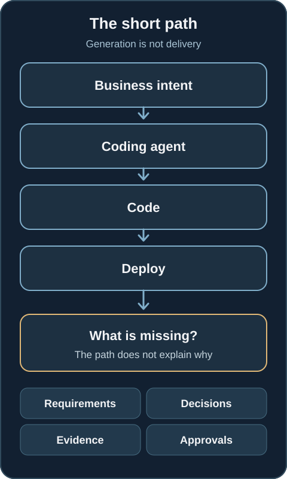
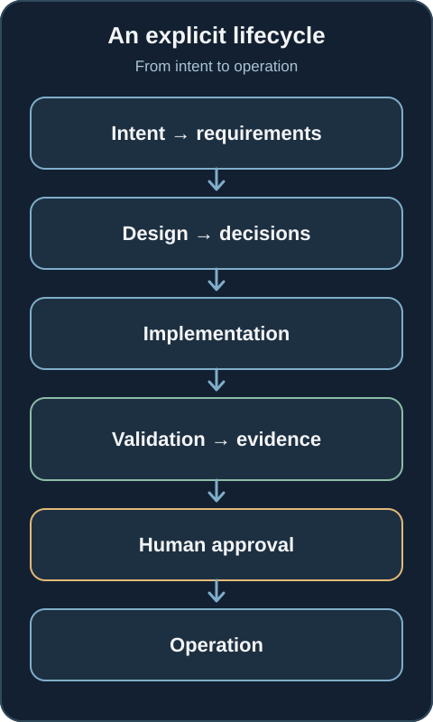
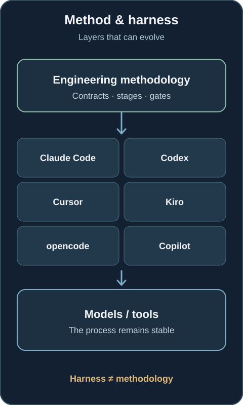
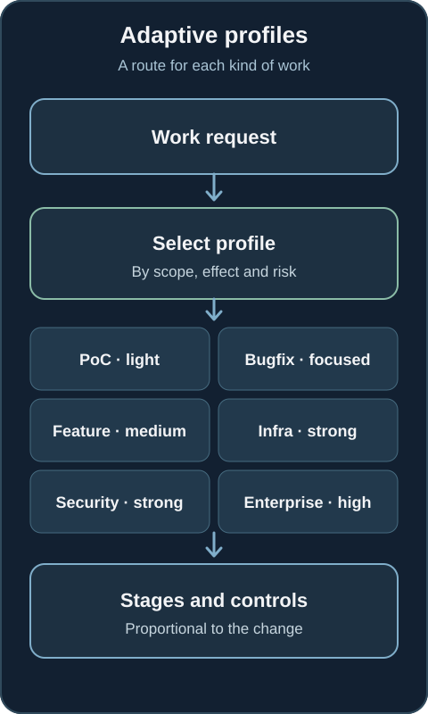
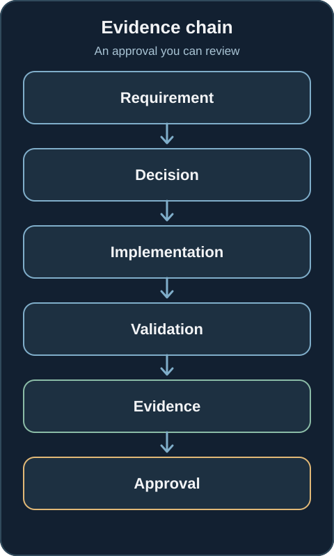
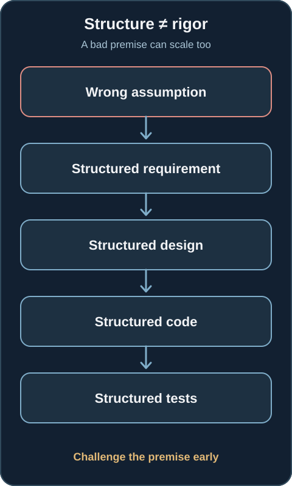
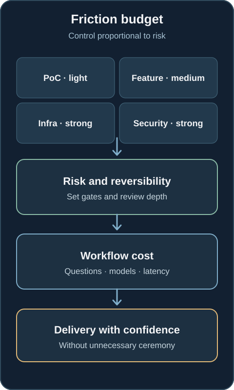
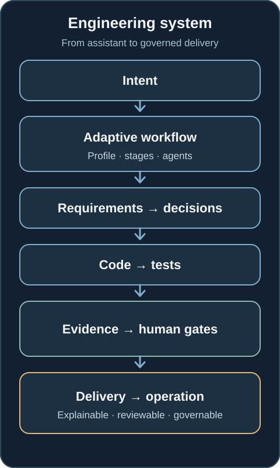

What happens when your AI agent can write code but cannot show how it got there?
A coding agent can produce a convincing solution. The engineering challenge is retaining the requirements, decisions, tests and approvals that make its work reviewable.
Coding agents are increasingly capable of producing software. Give one an open request such as “Build an inventory service with a REST API” and it may produce requirements, an architecture, code, tests and even infrastructure. That is impressive. It is also only part of the engineering problem.
Why was a design chosen? Which requirement does a feature satisfy? What alternatives were rejected? Which tests support the result? Who approved the consequential choices? Could we reconstruct the reasoning three weeks later?
Generating software and delivering software through a governed process are different capabilities.

The problem is not generating code
Ad hoc agent work often follows a short path: intent, prompt, agent, code. It can work well for a bounded task. As the work grows, a conversation produces one decision, the next changes another, context disappears and architectural reasons sink into chat history. A requirement changes, but its dependent decisions are hard to find. The code advances while traceability weakens.
We can end up with correct software and still be unable to explain the delivery process. The gap is everything between the original intent and the code: requirements, decisions, validation, evidence and authority.
What if the agent had to participate in a lifecycle?
awslabs/aidlc-workflows is an interesting concrete example. It implements the AI-Driven Development Life Cycle (AI-DLC) as a structured workflow around development agents. The central idea is not another code generator. It is a methodology around the agent: intent moves through requirements, design, decisions, implementation, validation, evidence, approval and operation.
The model still matters, but it is no longer the whole system. The workflow becomes part of the engineering system. Its stages create explicit handoffs and places to inspect what was produced.

The harness should not own the methodology
The project separates its methodology from the coding harness. Its harness documentation describes integrations with Claude Code, Kiro, Codex, Cursor, opencode and GitHub Copilot. The same methodological core is projected into different runtimes, although their enforcement mechanics differ.
If the process lives inside one assistant, changing assistants can also change the process. Separating the layers lets teams evolve tools and models while keeping engineering contracts more stable. That is more consequential than deciding which coding assistant wins this week.

The agent no longer performs a single task
The project's current lifecycle documentation describes five phases and 33 stages; its harness engineering guide describes 14 agent roles. Those numbers describe the available framework, not a requirement to execute every stage for every change.
Its workflow profiles select different paths for a feature, bugfix, proof of concept, infrastructure change or security patch. A typo, an authentication redesign and a production infrastructure change do not need the same route.
Governance should mean applying the right amount of control to the risk in front of us, not the maximum ceremony to every change.

Human gates are deliberate boundaries
At key points an agent stops, a person reviews, asks, corrects or approves, and the workflow continues. This adds friction. An entirely autonomous agent may generate code faster, but time to generate code is not the same as time to deliver with confidence, traceability and a way to recover.
The project's interaction guide describes approval gates after stages outside initialization. That is a particular implementation choice. The general engineering question is where human authority creates real value for the risk of a change. A trivial edit should not need the same review as a security boundary or a deployment decision.
Approval needs evidence
Asking someone to click Approve is not enough. A reviewer should be able to follow a chain: requirement → decision → implementation → validation → evidence → approval. The approval can then refer to what was intended, how it was addressed and what supports the result.
Artifacts and workflow state can make that chain more durable than a chat transcript alone. A transcript may contain useful context, but it should not be the only place where a team must search for a decision weeks later. The goal is a navigable evidence trail, not a longer conversation log.

More structure does not guarantee better decisions
A structured workflow can amplify a bad premise. An incorrect assumption can become a formal requirement, then a design, code, tests and a neatly approved record. The chain is traceable, but it may still be wrong.
This is the risk of mistaking ceremony for rigor. A workflow can make decisions explicit and reviewable. It cannot guarantee that the initial question, context or reasoning was sound. Capable models, good criteria, independent checks, critical thinking and human experience remain essential. Review should challenge assumptions early, before they gain the apparent legitimacy of a complete artifact chain.

Friction needs a budget
Every question, approval, artifact and additional model call consumes time, tokens and human attention. A governed workflow therefore needs a friction budget: how much review is warranted by the effect and reversibility of the change?
A proof of concept may need a light path. A production feature may need stronger evidence. Infrastructure or security work can require explicit authority and recovery plans. The point is proportionality, not a universal ranking of task types: an apparently small change can still carry high risk in the wrong context.

There is a model cost as well. Requirements analysis, architectural reasoning, risk discovery and cross-stage consistency ask more of a model than generating a function. The project's model guidance currently recommends a capable reasoning model and names Claude Opus 4.8 as its reference choice. That is a recommendation of this implementation, not a requirement for the operating model. More reasoning may improve decisions, but it also adds cost and latency. We should evaluate the quality of delivered evidence and outcomes alongside the cost of running the workflow.
The useful question is not simply “Does AI-DLC work?” It is for which kinds of work does this level of structure pay for itself? Adaptive profiles matter because they let us answer that question per change.
From coding assistant to engineering system
This connects directly to Platform Engineering. Platform teams have long made deployment, observability, infrastructure, secrets, CI/CD and policy consumable through repeatable interfaces. With agents, methodology, context, decisions, validation, evidence and governance also need interfaces that another actor can consume safely.
The consumer is no longer exclusively a person. An agent may do more of the work, but the organisation still needs to know what it did, why, under which rules, with what evidence and who retained authority over consequential choices. This is also the thread behind my earlier article on governable agent adoption.

AI-DLC Workflows is one implementation of a possible response. Not every organisation needs this exact methodology, and not every task needs its full depth. The important question as agents gain autonomy is: what engineering system do we build around them so that their work remains explainable, reviewable and governable?